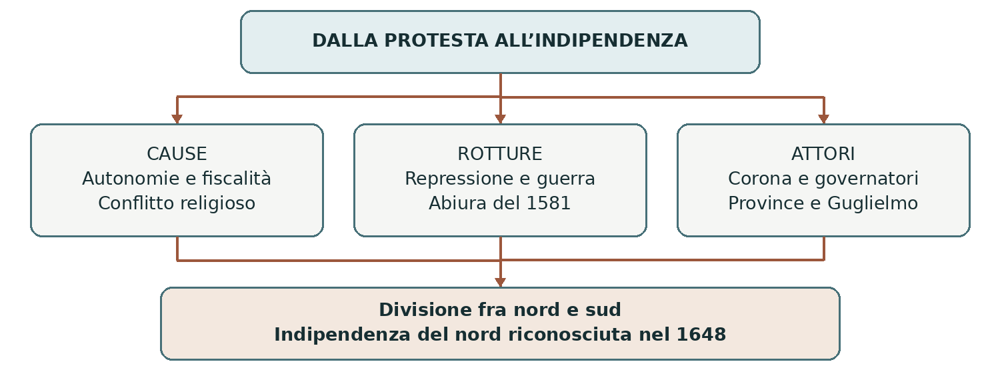

1566–1648
La rivolta dei Paesi Bassi
La rivolta dei Paesi Bassi nacque dal conflitto fra la monarchia di Filippo II e territori gelosi dei propri privilegi. Interessi politici, pressioni fiscali e contrasti religiosi si intrecciarono in una guerra lunga e discontinua. L’esito fu la separazione fra le province settentrionali indipendenti e i Paesi Bassi meridionali rimasti sotto gli Asburgo di Spagna.
0. Domanda generatrice
Come si trasformò una protesta contro il governo del sovrano in una lotta per l’indipendenza?
In sintesi L’indipendenza non fu l’obiettivo comune fin dall’inizio. Per ricostruirne la nascita bisogna distinguere le diverse ragioni dell’opposizione.
1. Il mondo precedente
I Paesi Bassi del Cinquecento comprendevano territori corrispondenti, con confini diversi, agli attuali Paesi Bassi, Belgio, Lussemburgo e parti della Francia settentrionale. Erano un insieme di province con leggi, assemblee e privilegi propri. Città manifatturiere e commerciali, grandi patrimoni nobiliari e agricolture differenti rendevano l’area ricca e articolata.
Carlo V aveva già perseguito l’accentramento e represso il protestantesimo. Con Filippo II, sovrano dei
Paesi Bassi dal 1555, aumentarono le tensioni fra governo centrale e autonomie locali. Queste terre non
erano una semplice provincia amministrativa della Spagna: appartenevano alla stessa monarchia
composita, conservando istituzioni distinte. La distanza del re e il governo attraverso rappresentanti
alimentarono il contrasto.
In sintesi Le autonomie provinciali convivevano con un sovrano comune. Le iniziative di uniformazione religiosa e politica resero più difficile questo equilibrio.
2. Le fratture
Nobili e città contestavano l’influenza del governo centrale, le richieste fiscali e le misure contro gli eretici. Fra i protestanti acquistò forza il calvinismo. Nel 1566 le proteste si accompagnarono a un’ondata di distruzioni di immagini sacre nelle chiese, detta furia iconoclasta. Molti cattolici temevano sia la repressione regia sia il radicalismo degli insorti.
Nel 1567 Filippo II inviò il duca d’Alba con un esercito. Il Consiglio dei Torbidi colpì gli oppositori con processi, esecuzioni e confische. La repressione estese l’ostilità e favorì la lotta armata, convenzionalmente datata dal 1568. La persecuzione religiosa non iniziava allora: esistevano già strumenti inquisitoriali ed editti repressivi sotto Carlo V.
In sintesi Il ricorso alla forza trasformò e allargò l’opposizione, senza renderla omogenea. Le diverse componenti cercarono un coordinamento difficile.
3. Attori, gruppi e conflitti
Guglielmo d’Orange divenne il principale punto di riferimento della resistenza e cercò di unire cattolici e protestanti contro il predominio del governo regio. Non tutti gli abitanti o tutte le province aderirono allo stesso progetto.
| Attori | Obiettivi e interessi |
|---|---|
| Filippo II e governatori | Difendere autorità dinastica, entrate fiscali e unità cattolica. |
| Nobiltà provinciale | Conservare influenza politica e privilegi; una parte restò fedele al re. |
| Città e mercanti | Difendere autonomie e attività economiche, con posizioni non uniformi. |
| Calvinisti e insorti | Ottenere sicurezza religiosa e resistere alla repressione. |
| Guglielmo d’Orange | Coordinare la ribellione e cercare sostegni interni ed esterni. |
In sintesi Interessi comuni permisero alleanze, ma religione e obiettivi politici continuavano a dividere gli oppositori. Queste divisioni orientarono la guerra.
4. Il processo storico
Dalla resistenza alla guerra
Dopo i primi insuccessi, la ribellione ottenne una base più solida nel 1572, quando i ribelli detti “pezzenti del mare” conquistarono Brielle e diverse città di Olanda e Zelanda si sollevarono. Porti, corsi d’acqua e possibilità di allagare territori favorivano la difesa. La monarchia spagnola conservava grandi risorse, ma doveva finanziare campagne lunghe e difficili.
Nel 1576 il saccheggio di Anversa da parte di soldati ammutinati accrebbe l’ostilità contro le truppe spagnole. La Pacificazione di Gand tentò di coordinare province cattoliche e protestanti per ottenere il loro ritiro e tutelare i privilegi. Il compromesso non risolse però i contrasti sul culto e sul governo delle città.
La separazione delle province
Il governatore Alessandro Farnese unì riconquista militare e negoziato. Nel 1579 alcune province
meridionali formarono l’Unione di Arras e si riconciliarono con il re; l’Unione di Utrecht collegò invece
territori e città intenzionati a continuare la resistenza. Non si trattò ancora di una divisione geografica
perfettamente netta: anche centri meridionali parteciparono alla rivolta.
Nel 1581 gli Stati generali delle province ribelli dichiararono decaduto Filippo II con l’Atto di abiura. Dopo tentativi di trovare un altro sovrano, il governo repubblicano si consolidò nel 1588. L’assassinio di Guglielmo d’Orange nel 1584 non fermò il processo. La riconquista spagnola di Anversa nel 1585 spinse molti abitanti, capitali e competenze verso il nord.
Una guerra interrotta dalla tregua
La tregua dei Dodici anni, 1609–1621, sospese il conflitto e riconobbe di fatto la posizione autonoma
delle Province Unite. Non fu il riconoscimento definitivo dell’indipendenza: i combattimenti ripresero nel
1621, intrecciandosi alla guerra dei Trent’anni.
Nel 1648, con la pace di Münster fra Spagna e Province Unite, parte del sistema di accordi di Westfalia, la monarchia spagnola riconobbe formalmente l’indipendenza della repubblica. Le province meridionali rimasero asburgiche e prevalentemente cattoliche; il nord sviluppò un diverso assetto politico e confessionale.
In sintesi L’indipendenza derivò da una successione di rotture, coalizioni e resistenze. Tregua, rifiuto del sovrano e riconoscimento internazionale furono passaggi distinti.
Lo snodo decisivo
1581: non si chiede soltanto al re di governare diversamente, ma si nega che abbia ancora diritto all’obbedienza. È il passaggio dalla contestazione del governo al rifiuto del sovrano.
5. Le fonti in dialogo
L’Atto di abiura del 1581
Fonte: Atto di abiura, emanato dagli Stati generali delle province ribelli il 26 luglio 1581. Il documento giustifica davanti ai sudditi e alle altre potenze la rottura con Filippo II.
Contenuto — sintesi didattica: Il principe deve proteggere i sudditi. Quando li opprime e viola i loro diritti può essere abbandonato: gli Stati generali dichiarano perciò decaduto Filippo II dalla signoria sui territori che rappresentano.
Interpretazione e limiti: È una giustificazione politica prodotta dagli insorti. Non proclama il suffragio universale e non rappresenta automaticamente le opinioni di tutti gli abitanti. La repubblica si stabilizzò solo attraverso sviluppi successivi.
Domanda di lettura: Quale dovere del principe viene usato per giustificare il diritto di sottrarsi alla sua autorità?
Fonte conservata al Nationaal Archief — Plakkaat van Verlatinge
In sintesi L’atto trasforma una resistenza concreta in un argomento sulla legittimità del potere. La separazione ebbe conseguenze ben oltre il conflitto militare.
6. Conseguenze e nuovo assetto
La divisione dei Paesi Bassi si consolidò, ma non coincise da subito con i confini odierni. Guerre e persecuzioni provocarono spostamenti di popolazione; il nord beneficiò anche dell’arrivo di competenze mercantili e artigiane. La vittoria repubblicana dipese inoltre da risorse navali, capacità fiscali e sostegni esterni.
L’unione delle province indipendenti dovette conciliare difesa comune e autonomie locali. Questa tensione continuò a caratterizzare la vita della repubblica, affrontata nella lezione sulle Province Unite.
In sintesi La vittoria risolse il rapporto con la Spagna, ma aprì il problema di governare insieme territori autonomi. Il processo non fu soltanto religioso.
7. Conclusione
La protesta diventò indipendenza perché repressione e guerra resero sempre meno praticabile un accordo con il sovrano. L’esito non era inevitabile: fu costruito attraverso scelte politiche, rotture interne e una lunga resistenza.
Sintesi finale Autonomie locali e accentramento entrarono in conflitto. La repressione religiosa si intrecciò a interessi politici ed economici. Nel 1579 la coalizione delle province si divise. Nel 1581 gli insorti rifiutarono l’autorità di Filippo II. La tregua del 1609 precedette l’indipendenza riconosciuta nel 1648.
Per studiare e collegare
Coordinate essenziali
Spazio: Paesi Bassi asburgici; soprattutto Olanda, Zelanda, Fiandre e Brabante. Tempo: crisi aperta nel
1566; guerra convenzionalmente 1568–1648, con tregua nel 1609–1621.
Saperi irrinunciabili
1. I Paesi Bassi erano un insieme di province con privilegi distinti.
2. Carlo V aveva già perseguito accentramento e repressione religiosa.
3. Filippo II cercò di rafforzare autorità regia e uniformità cattolica.
4. Nobili, mercanti e calvinisti avevano motivi di opposizione differenti.
5. La crisi iconoclasta del 1566 fu seguita dalla repressione del duca d’Alba.
6. Guglielmo d’Orange cercò di coordinare la resistenza.
7. Arras e Utrecht nel 1579 espressero la divisione della coalizione.
8. L’Atto di abiura del 1581 dichiarò decaduto Filippo II.
9. La tregua del 1609 non fu ancora una pace definitiva.
10. La Spagna riconobbe le Province Unite a Münster nel 1648.
Mappa concettuale

La guerra modifica gli obiettivi iniziali. Il rifiuto del sovrano precede il consolidamento repubblicano e il riconoscimento internazionale.
Strumenti e attività
Linea del tempo ragionata
| Quando | Che cosa cambia |
|---|---|
| 1566–1568 | Proteste, iconoclastia, repressione e avvio della guerra. |
| 1572 | Brielle e insurrezioni di Olanda e Zelanda. |
| 1576 | Pacificazione di Gand e tentativo di azione comune. |
| 1579–1581 | Unioni contrapposte e Atto di abiura. |
| 1609–1621 | Tregua dei Dodici anni. |
| 1648 | Pace di Münster e riconoscimento dell’indipendenza. |
Vocabolario essenziale
Monarchia composita. Territori distinti uniti sotto un sovrano, con leggi e istituzioni proprie.
Iconoclastia. Distruzione di immagini religiose considerate illegittime.
Privilegio. Diritto o esenzione riconosciuto a un gruppo o territorio.
Abiura del sovrano. Rifiuto formale dell’obbligo di fedeltà a un principe.
Attività di comprensione
1. Distingui tre motivi di opposizione a Filippo II e individua i gruppi che li sostenevano.
2. Spiega perché 1581, 1609 e 1648 non indicano lo stesso passaggio politico.
3. Confronta il dovere di protezione del principe nell’Atto di abiura con il diritto degli insorti di resistere. Il testo implica già una democrazia? Motiva.
Fonti e approfondimenti
Lezione di riferimento: «moderna.ppt», diapositiva 6. I collegamenti seguenti permettono di leggere la fonte e approfondire i passaggi centrali.
Nationaal Archief — Unione di Utrecht del 1579
Treccani — Inquisizione, anche nei Paesi Bassi di Carlo V